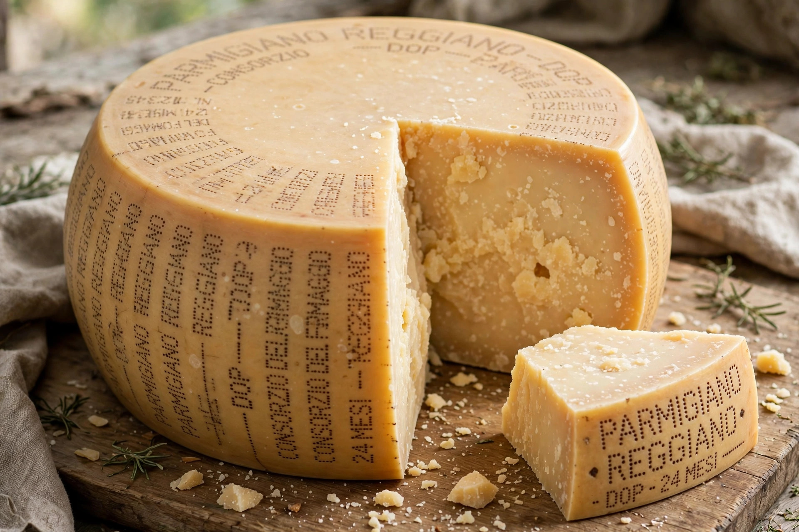

From Wikipedia, the free encyclopedia
| EU geographical indications | |
|---|---|
 | |
| Types | PDO, PGI, TSG |
| Governing law | EU Regulation 1151/2012 |
| Registered names | Over 3,500 |
A protected designation of origin (PDO) is a type of geographical indication under European Union law that protects the name of a food product made in a specific region according to a traditional method, where the qualities of the product are essentially or exclusively due to its geographical environment, including natural and human factors. Only producers within the defined area who follow the registered specification may use the name.
The EU maintains three quality schemes for agricultural products and foodstuffs:
Wines and spirit drinks have parallel, older systems: PDO wine (including France's AOC/AOP, Italy's DOC/DOCG, Spain's DO/DOCa) and geographical indications for spirits (e.g. Cognac).
France pioneered appellation control for wine with the Appellation d'origine contrôlée (AOC) system created in 1935, born of earlier scandals over wine fraud; Champagne's boundaries were delimited in 1908. The EU extended the concept to all foods in 1992 and consolidated the regime in Regulation 1151/2012, adopted to replace the earlier regulations and strengthen protection against imitation.
PDO and PGI names are enforced across the EU and in many third countries through trade agreements: for example, "Parmesan" sold in the EU must be Parmigiano-Reggiano; elsewhere, such as the United States, the names are often not protected and generic uses persist, a recurring point of friction in transatlantic trade negotiations. Notable disputes include the long-running battle over "Feta" — a Greek PDO since 2002, upheld against Danish and German producers — and the use of "Champagne" for sparkling wines made outside the region.